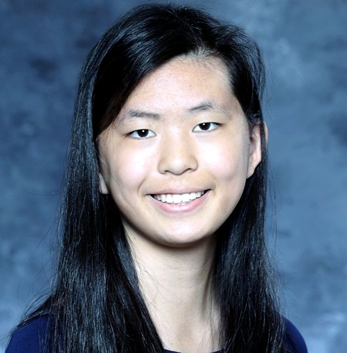

I'm a rising senior at Proof School. I love doing math and am currently performing research with Zhenkun Li as part of the MIT PRIMES-USA program. I attended PROMYS in the summers of 2018 and 2019; this summer, I am a part of the functional analysis reading group in MORPH, an online reading program run by Harvard undergraduates.
In my free time, I love to read poems and novels, look at beautiful art, and listen to music (think an odd mix of pop, 80s music, and classical music).
I also love learning about completely unimportant intricacies of the English language, as well as completely unimportant intricacies in general; did you know, for instance, that there Russet Burbank potatoes are all male and all sterile? Indeed, most commercially potatoes do not reproduce at all—instead, they are cloned.